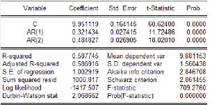

Chapitre 1 : Complément sur les séries chronologiques
Contenu
Chapitre 1 : Complément sur les séries chronologiques¶
Complément sur les séries chronologiques¶
1. Rappels et concepts de base¶
Définition
On appelle série chronologique ou temporelle ou encore chronique une suite d’observations chiffrées d’un même phénomène et ordonnées dans le temps (t).
Fréquence d’observation
Les dates d’observations sont généralement ordonnées de manière régulière dans le temps (t).
Le temps est défini comme variable discrète et les données observées peuvent être des secondes, minutes, heures, jours, semestres, années …etc. On parle alors de fréquence de données.
Exemples :
Série chronologique économique :
PIB, taux d’inflation, taux de croissance, taux de chômage au Maroc.
Série chronologique financière :
CAC40, Oil, la consommation d’électricité au Maroc, le nombre de passagers en milliers dans les transports aériens, Evolution de la population des Etats Unis, en millions d’habitants, entre 1790 et 2023.
Pourquoi analyse t-on les Séries Chronologiques ?
L’objectif de l’analyse des séries chroniques est :
Comprendre
Modéliser
Prévenir et contrôler
Série chronologique univariée
Une série chronologique univariée peut être représentée par :
Ainsi, une série temporelle univariée se limite à l’évolution d’une variable unique dans le temps.<\i>
Série chronologique multivariée
Une série chronologique multivariée peut être représentée par :<\i>
Une série chronologique multivariée regroupe plusieurs séries univariées. Elle permet d’identifier les corrélations entre plusieurs variables évoluant dans le temps.
2. Décomposition d’une série chronologique¶
Décomposition d’une série chronologique
Un série temporelle \((Y_t)\) repose sur la décomposition de la variable observée selon le temps en plusieurs composantes :
la tendance (Trend component ou encore Trend-Cycle) \(T_t\) : observée sur une longue durée, elle traduit l’orientation (baisse ou hausse) générale de la série étudiée
La composante saisonnière (Seasonality component) \(S_t\) : variation due à un effet momentané se reproduisant à intervalles réguliers
La composante résiduelle (Noise term) \(\eta_t\) : correspond à des fluctuations irrégulières, en général de faible intensité mais de nature aléatoire. On parle aussi de ou bruit ou résidu
Ces éléments peuvent s’associer de manière :
Additive : \(Y_t = T_t + S_t + \eta_t\)
Multiplicative : \(Y_t = T_t \times S_t \times \eta_t\)
3. Causalité and invisibilité¶
Définition
Un processus stochastique \((Y_t)\) est dit causal si il existe une suite réelle \(\psi = (\psi_t)_{t \in \mathbb{Z}}\) telle que :
Avec :
\((\eta_j)\) est un bruit blanc de moyenne nulle et de variance \(\sigma^2\)
\( \sum_{j=0}^{\infty} |\psi_j| < \infty\)
Exercice
Soit \(Y = (Y_t)\) le processus défini par :
Chercher l’écriture causale de \((Y_t)\)
Ce processus est donc causal.
Définition
Un processus stochastique \((Y_t)\) est dit inversible si il existe une suite réelle \(\pi= (\pi_t)_{t \in \mathbb{Z}}\) telle que :
Avec :
Exercice
Considérons le processus suivant :
Y est-l inversible ?
Donc \(Y = (Y_t)\) est inversible
4. Processus stationnaire¶
La stationnairité est la propriété d’une série temporelle à garder ses caractéristiques inchangées au passage du temps.
Elle implique l’absence de tendance dans les données ainsi qu’une moyenne et variance constantes pour la Série Temporelle. On distingue deux types de stationnarité :
4.1. Stationnairité au sens stricte¶
Définition
Un processus \(\lbrace Y_t, {t \in T}\rbrace\), est stationnaire au sens stricte si :
4.2. Stationnairité au au second ordre¶
Stationnairité au au second ordre
Le processus Y = \(\lbrace Y_t , {t \in \mathbb{Z}\rbrace}\), est stationnaire au second ordre ou au sens faible (wide-sense stationary) si :
\(\mathbb{E}(Y_t) = cst ~~,~~ \forall t \in \mathbb{Z}\) indépendant de t
\(E(Y^2_t) < \infty ~~,~~ \forall t \in \mathbb{Z}\)
\(\gamma_Y (k) = Cov(Y_t, Y_{t-k}) ~~,~~ \forall t \in \mathbf{Z}, \forall k \in \mathbb{Z}\) est indépendant de t.
Remarque
Un processus \((Y_t)\) est faiblement stationnaire si ses moments ne dépend pas du temps.
On pratique, la stationnairité au second ordre est la plus utilisée dans l’analyse des Série Temporelle et elle est souvent appelée stationnairité en covariance.
4.3. White Noise¶
Définition
Le processus stochastique \(\lbrace \eta_t \rbrace_{t \in \mathbb{Z}}\), est un bruit blanc (white noise) si :
\(\mathbb{E}(\eta_t) = 0 ~~,~~ \forall t \in \mathbb{Z}\)
\(\mathbb{E}(\eta^2_t) = \sigma^2 ~~,~~ \forall t \in \mathbb{Z}\)
\(Cov(\eta_t, \eta_{t-k}) = 0 ~~,~~ \forall t \in \mathbb{Z}, \forall k \in \mathbb{Z}^{*}\)
On note \((\eta_t) \sim bb(0, \sigma^2 )\)
Remarque
Le processus stochastique \(\lbrace \eta_t \rbrace_{t \in \mathbb{Z}}\), est un bruit blanc gaussien si \(\eta_t\) \(\sim\) i.i.d \(N(0, \sigma^2)\)
Exercice
On considère le modèle suivant :
Avec \((\eta_t) \stackrel{i.i.d}{\sim} ( 0, \sigma^2)\) et \(t \in \mathbb{Z}\).
Mq \(\lbrace Y_t \rbrace_{t \in \mathbb{Z}}\) est stationaraire au second ordre.
Ainsi, \(\lbrace Y_t \rbrace_{t \in \mathbb{Z}}\) est stationaraire au second ordre.
Exercice
On considère le modèle suivant :
Mq \(\lbrace Y_t \rbrace_{t \in \mathbb{Z}}\) est un processus stationaraire en covariance.
Ainsi, \(\lbrace Y_t \rbrace_{t \in \mathbb{Z}}\) est un processus stationaraire en covariance.
Exercice
Supposons que :
Etudier la stationnarité de \((Y_t)\).
Ainsi:
Aussi :
Ainsi, le processus stochastique \( \lbrace Y_t , {t \in \mathbb{Z}}\rbrace \), n’est pas stationnaire au second ordre.
corollaire
\(\lbrace \eta_t \rbrace_{t \in \mathbb{Z}} \sim bb( 0, \sigma^2) \Rightarrow \lbrace \eta_t \rbrace_{t \in \mathbb{Z}}\) un processus faiblement stationnaire
Transformation des ST
La transformation logarithmique :
Cette technique est utilisée lorsque les données présentent une croissance exponentielle, pour obtenir une ST ayant une croissance linéaire.
La différentiation :
Est la technique la plus utilisée pour stationnariser les variables : différence première \(\Delta X_t\), différence seconde \(\Delta^2 X_t\).
La différentiation logarithmique :
Différence (d) sur les transformations logarithmiques.
Remarque importante
Une série temporelle qui devient stationnaire après différentiation est dit : stationnaire en différence.
Une série temporelle qui devient stationnaire après d différences est dit : intégrée d’ordre d.
5. Les processus stochastiques¶
5.1. Le processus moyenne mobile¶
Définition
On dit que la série chronologique \(\lbrace Y_t \rbrace_{t \in \mathbb{Z}}\) est un processus moyenne mobile q si elle est définie, pour tout \(t \in \mathbb{Z}\), par:
Avec \(\mu \in \mathbb{R}\), \(\theta = (\theta_1, \theta_2, \ldots, \theta_q)\in \mathbb{R}^q\) et \((\eta_{t}) \stackrel{i.i.d}{\sim} (0, \sigma^2)\).
Pour signifier que le processus \((Y_t)\) est engendré par une moyenne mobile d’ordre q, nous noterons :
Remarque
Attention aux notations !
Les parenthèses autour de \((Y_t)\) sont ici indispensables : elles signifient que l’on considère le processus, alors que \(Y_t\) sans parenthèses désigne la variable aléatoire extraite du processus à l’instant t.
Remarque
Par définition, le processus stochastique moyenne mobile MA(q) est toujours causal.
Proposition
Soit \((Y_t)\) \(\sim\) MA(1) alors :
Démonstration
Soit \((Y_t)\) \(\sim\) MA(1) alors :
Aussi,
Ainsi,
EXERCICE
Soient \(\epsilon_t\) et \((\eta_t)\) deux bruits blancs de moyenne nulle et de variance \(\sigma^2\), et \(\theta \in \left]-1;1\right[\setminus{0}\).
On suppose que :
Questions
Déterminer le type des processus \((X_t)\) et \((Y_t)\) ?
\((X_t)\) et \((Y_t)\) sont-elles stationnaires ?
\((X_t)\) et \((Y_t)\) sont-elles causales ?
Montrer que les séries \((X_t)\) et \((Y_t)\) ont les mêmes fonctions d’autocorélation.
EXERCICE
Soit X= \((X_t)\) un processus stochastique tel que :
Avec \((\eta_t)\) est un bruit blanc de moyenne nulle et de variance \(\sigma^2\).
Questions
Est-il stationnaire en covariance ?
Est-il causal ?
Est-il inversible ?
On notee \(\psi_j\) les coefficients du processus \(MA(\infty)\) correspondant à ce processus :
a). calculer alors les coefficients \(\psi_1\), \(\psi_2\), \(\psi_3\), \(\psi_4\), \(\psi_5\) et \(\psi_6\).
b). Déterminer \(\psi_{2023}\)
Proposition
Si \((Y_t)\) \(\sim\) MA(2) alors :
Théorème
Soit \((Y_t)\) \(\sim\) MA(q) alors :
Théorème
Si \(\lbrace Y_t \rbrace_{t \in \mathbb{Z}}\) MA(q) alors \(\lbrace Y_t \rbrace_{t \in \mathbb{Z}}\) est nécessairement stationnaire.
Démonstration
Soit t \(\in \mathbb{Z}\) and \(\theta_j \in \mathbb{R}\). Supposons que \((Y_t)\) \(\sim\) MA(q) tels que :
D’où,
\(\gamma_Y(k) \) est indépendante du temps.
Ainsi, si le processus \(\lbrace Y_t \rbrace_{t \in \mathbb{Z}}\) suit un MA(q) alors \(\lbrace Y_t \rbrace_{t \in \mathbb{Z}}\) est nécessairement stationnaire.
Theorème
Soit \((X_t)\) \(\sim\) MA(q) tel que :
\((X_t)\) est inversible si ses racines sont de modules supérieurs à 1. Autrement dit :
Exercice
Soit le processus \((X_t)\) de type MA(q) suivant:
Où \((a_t)\) est un bruit blanc de variance notée \(\sigma^2\)
De quel type est le processus \((X_t)\) ?
Déterminer le nombre de retard q associé à ce processus.
Calculez l’espérance et la variance du processus \((X_t)\).
Le processus est-il stationnaire ? Justifier votre réponse!
Calculer sa fonction d’autocorrélation \(\rho\).
Le processus est-il causal ? justifier.
Le processus est-il inversible ?
On note \(\pi_j\) les coefficients du processus \(AR(\infty)\) correspondant à ce processus, calculer alors les coefficients \(\pi_1\), \(\pi_2\), \(\pi_3\), \(\pi_4\), \(\pi_5\) et \(\pi_6\).
5.2. Le processus autorégressif¶
Définition
On dit que la série chronologique \(\lbrace Y_t \rbrace_{t \in \mathbb{Z}}\) est un processus autorégressif d’ordre p si elle est définie, pour tout \(t \in \mathbb{Z}\), par:
ou encore :
Avec \(\mu \in \mathbb{R}\) , \(\Phi = (\Phi_1, \Phi_2, \ldots, \Phi_p)\in \mathbb{R}^p\) et \(\eta_{t} \stackrel{i.i.d}{\sim} (0, \sigma^2)\).
Pour signifier que le processus \((Y_t)\) est engendré par un processus autorégressif d’ordre p, nous noterons :
Remarque
Par définition, le processus autorégressif AR(p) est toujours inversible.
Théorème
Soit \((Y_t)\) \(\sim\) AR(p).
Le processus \((Y_t)\) stationnaire et causal si si les racines du polynôme \(A(z) = 1 − \phi_1z −· · ·- \phi_pz^p\) sont de module strictement supérieur à 1.
Proposition
Preuve
On considère \((Y_t) \sim AR(1)\). Ainsi ,
Avec \(|\Phi|<1\), \(\mu \in \mathbb{R}\) and \(\eta_{t} \stackrel{i.i.d}{\sim} (0, \sigma^2)\)
Aussi,
Théorème
On considère \(\lbrace Y_t \rbrace_{t \in \mathbb{Z}} \sim AR(1)\). Si \(\Phi = 1\) alors \(\lbrace Y_t \rbrace_{t \in \mathbb{Z}}\) est un processus non stationnaire
Preuve
Soit \(\lbrace Y_t \rbrace_{t \in \mathbb{Z}} \sim AR(1)\).
On suppose que \(\Phi = 1\). Alors :
\(Y_t = \mu + \Phi Y_{t-1} + \eta_t = \mu + Y_{t-1} + \eta_t\)
D’où,
Définition
Soit \(Y = \lbrace Y_t, t \in \mathbb{Z} \rbrace\) un processus autoregressive d’ordre 2, AR(2).
Avec \(\mu \in \mathbb{R}\) , \(\Phi = (\Phi_1, \Phi_2)\in \mathbb{R}^{2}\) et \(\eta_{t} \stackrel{i.i.d}{\sim} (0, \sigma^2)\).
\(Y\) est stationnaire et causal si les racines du polynôme \(A(z) = 1 − \phi_1z − \phi_2z^2\) sont de module strictement supérieur à 1.
Exercice
Nous supposons que le rendement quotidien des séries temporelles à l’instant t peut s’exprimer comme suit :
Soit alors \((\zeta_{t}) \stackrel{i.i.d}{\sim} (0, \sigma^2)\) et \(t \in \mathbb{Z}\)
Avec \(A(z) = (1 + 0.2z - 0.48z^2)\) indique l’équation characteristique.
Cherchons alors les racines de A. Il est à noter que les racines du polynome quadratique \(ax^2+bx+c=0\) sont données par \(\dfrac{-b \pm \sqrt{b^2-4ac}}{2a}\) , si a \(\neq\) 0.
Ainsi, \(\lbrace r_t \rbrace_{t \in \mathbb{Z}}\) est causal et strictement stationnaire puisque toutes les racines A(z) sont outside du circle unitaire (i.e. \(|z_j|>1 ~,~ j \in \lbrace 1,2\rbrace )\).
Exercice
Considérons le processus stochastique suivant :
Avec \((\eta_t)\) est le white noise usuel.
Ainsi, l’équation characteristique est donnée par \(A(z) = 1-1.2z - 1.2z^2= 0\).
Graphiquement, on peut montrer que les racines inverses de notre série chronologique se trouvent dans le cercle unité. En effet, au moins une de ses racines réelles \(z_1\approx -1.54\) , \(z_2\approx 0.54\), est en dehors du cercle unité ce qui signifie que le processus est explosif (non stationnaire).
Théorème
5.3. Processus autorégressifs et moyennes mobiles¶
Définition
Les processus ARMA généralise les modèles autorégressifs et moyennes mobiles. Ces processus sont très utiles en pratique pour modéliser des séries éonomiques et financières en nécessitant moins de paramètres que les modèles AR ou MA simples.
Définition
On dit que la série chronologique \((y_t)\) définie sur \(\mathbb{Z}\) est un processus autorégressif moyenne mobile d’ordre (p, q) si elle est définie, pour tout t \(\in \mathbb{Z}\), par
Where :
\((\eta_t)\) est un white noise tel que \((\eta_t)\) \(\sim\) WN (0 , \(\sigma^2\)).
\(\Phi_1, \Phi_2, \ldots \Phi_p \) representent les coefficients du modèle MA.
\(\theta_1, \theta_2, \ldots \theta_q \) representent les coefficients du modèle AR.
\(\mu\) \(\in\) \(\mathbb{R}\) represente le terme constant.
Pour signifier que le processus \((y_t)\) est un autorégressif moyenne mobile d’ordre (p, q), nous noterons :
l’application de l’opérateur retard (B) conduit à l’écriture suivante :
Avec
Exercice
ARMA(1,0)= AR(1) :
\(\Phi_1 (B)y_t = \Theta_1(B)\eta_t \Leftrightarrow y_t = \Phi_1 y_{t-1}\)
ARMA(0,1)= MA(1) :
\(\Phi_1 (B)y_t = \Theta_1(B)\eta_t \Leftrightarrow y_t = \Theta_1\eta_{t-1} + \eta_t \).
ARMA(1,1) :
\(\Phi_1 (B)y_t = \Theta_1(B)\eta_t \Leftrightarrow y_t = \Phi_1 y_{t-1} + \Theta_1\eta_{t-1} + \eta_t \).
ARMA(2,1) :
\(\Phi_2 (B)y_t = \Theta_1(B)\eta_t \Leftrightarrow y_t = \Phi_1 y_{t-1} + \Phi_2 y_{t-2} + \theta_1\eta_{t-1} + \eta_t \).
ARMA(1,2) :
\(\Phi_1 (B)y_t = \Theta_2(B)\eta_t \Leftrightarrow y_t = \Phi_1 y_{t-1}+ \theta_2 \eta_{t-2} + \theta_1\eta_{t-1} + \eta_t \).
ARMA(2,2) :
\(\Phi_2 (B)y_t = \Theta_2(B)\eta_t \Leftrightarrow y_t = \Phi_1 y_{t-1}+ \Phi_2 y_{t-2} + \theta_2 \eta_{t-2} + \theta_1\eta_{t-1} + \eta_t \)
Remarque
Quand q = 0 alors ARMA(p,0) \(\equiv \) AR(p):
Quand p = 0 alors ARMA(0,q) \(\equiv \) MA(q):
Exercice
Soit \((X_t)\) un ARMA(2,2) tel que \(\Phi_1= 3\), \(\Phi_2= 6\), \(\theta_1=-\dfrac{14}{3}\) and \(\theta_1=5\).
\((X_t)\) est-il un processus causal ?
\((X_t)\) peut être exprimé :
Ainsi, \((X_t)\) est un ARMA(2,2) causal et stationnaire (les racines du polynôme characteristique associé sont superieures à un), avec :
puisque elle est surparametré ( peut être paramétré à un processus ARMA(1,1)).
Remarque
Pour idéntifier les MA(q) and AR(p), on peut utiliser les ACF et PACF.
6. Prévision des séries chroniques¶
6.1. Le modèle naïf¶
Le modèle naïf
Dans une prévision naïve, la prévision pour l’instant t correspond à la valeur de données à l’instant t -1.
Il suffit alors de reconduire de manière constante la dernière valeur connue du passé pour l’avenir. On parle de prévision naïve.
6.2. Average Forecast¶
Average Forecast
Dans Average Forecast, la prévision pour l’instant t correspond à la moyenne de la série étudiée.
6.3. Prévision dans un processus autorégressif¶
Prévision dans un processus autorégressif
La prévision optimale d’un processus autorégressif AR(p):
à la date t + 1, faite à la date t, \(\hat{X}_{t+1}\), est :
Exercice
On vous donne les valeurs suivantes d’une série \((X_t)\),
t |
1 |
2 |
3 |
4 |
5 |
6 |
7 |
|---|---|---|---|---|---|---|---|
X |
2,5 |
5,3 |
1,1 |
-1,9 |
3 |
2,8 |
2,6 |
Après analyse, le modèle suivant est jugé adéquat pour cette série temporelle :
avec \((\eta_t) \sim WN(0, 4)\).
Donner l’expression de \(\hat{X}_{t+1}\).
Calculer la meilleure prévision de \(\hat{X_8}\).
Exercice
On vous donne les valeurs suivantes d’une série chronique \((X_t)\) ,
t |
1 |
2 |
3 |
4 |
5 |
6 |
7 |
|---|---|---|---|---|---|---|---|
X |
2,5 |
5,3 |
1,1 |
-1,9 |
3 |
2,8 |
2,6 |
Après analyse, le modèle suivant est jugé adéquat pour cette série \((\eta_t) \sim WN(0, 4)\)

Donner l’expression explicite de \((X_t)\).
Donner l’expression de \(\hat{X}_{t+1}\).
Calculer la meilleure prévision de \(\hat{X_8}\).
6.3.1 Prévisions d’un processus autorégressif AR(1) à horizon 1¶
Prévisions d’un processus autorégressif AR(1) à horizon 1
Pour un processus AR(1) : \(X_t = \phi X_{t-1}+ \mu + \eta_t\)
Si \(|\phi|<1\) alors La prévision optimale à la date t + 1, \(\hat{X}_{t+1}\), est :
6.3.2 Prévisions d’un processus autorégressif AR(1) à horizon k¶
Prévisions d’un processus autorégressif AR(1) à horizon k
Pour un processus AR(1) : \(X_t = \phi X_{t-1}+ \mu + \eta_t\)
Si \(|\phi|<1\) alors La prévision optimale à la date t + k, \(\hat{X}_{t+k}\), est
Démonstration
6.3.3 Prévisions d’un processus autorégressif AR(2) à horizon k¶
Prévisions d’un processus autorégressif AR(2) à horizon k
Pour un processus AR(2) :
La prévision optimale à la date t + 1, \(\hat{X}_{t+1}\), est :
La prévision optimale à la date t + 2, \(\hat{X}_{t+2}\), est :
La prévision optimale à la date t + 3, \(\hat{X}_{t+3}\), est :
Exercice
On vous donne les valeurs suivantes d’une série \((X_t)\) ,
t |
1 |
2 |
3 |
4 |
5 |
6 |
7 |
|---|---|---|---|---|---|---|---|
X |
2,5 |
5,3 |
1,1 |
-1,9 |
3 |
2,8 |
2,6 |
Après analyse, le modèle suivant est jugé adéquat pour cette série \((\eta_t) \sim WN(0, 4)\)
Donner l’expression de \(\hat{X}_{t+1}\), \(\hat{X}_{t+2}\) et \(\hat{X}_{t+3}\).
Calculer la meilleure prévision de \(\hat{X_8}\), \(\hat{X_9}\) et \(\hat{X_{10}}\).
6.4. Prévision dans les processus moyenne mobile¶
La prévision optimale d’un processus MA(1) :
à la date t + 1, faite à la date t, \(\hat{X}_{t+1}\), est :
Pour \(k \geq 2\), la prévision optimale à la date t + k, \(\hat{X}_{t+k} \), est
Remarque
C’est à dire qu’à partir d’un horizon 2, la meilleure prévision pour un processus Moyenne Mobile MA(1) est la moyenne du processus.
La prévision optimale d’un processus MA(p)
A partir d’un horizon k, la meilleure prévision pour un processus Moyenne Mobile MA(p) est la moyenne du processus \((k\geq p+1)\) $\( \hat{X}_{t+k} = \mu ~~~~, ~~ \forall k \geq p +1 \)$